# 楔子
早就想学习如何编写远控了。
前几天网上冲浪看到了一篇博客，其博主看教程是 11 年的了（11 年了）的网名为老狼的前辈的教程，于是我也在网上找了一下教程，虽然已经有些年头了，不过这并不影响我们学习大规模软件开发的设计思想。
注：因为目前本人水平有限，有些内容会搬运教程中的教案，如若侵权，请留言，本人即刻删除。
# 正文
创建一个基于对话框的 MFC 项目。
首先设计主控端的界面。
# 对话框、列表控件的伸缩
新建一个工程，看操作 我们必须给工程起一个响亮的名字 😄 就叫
Or0Remote吧添加最大化窗口，最小化窗口的属性
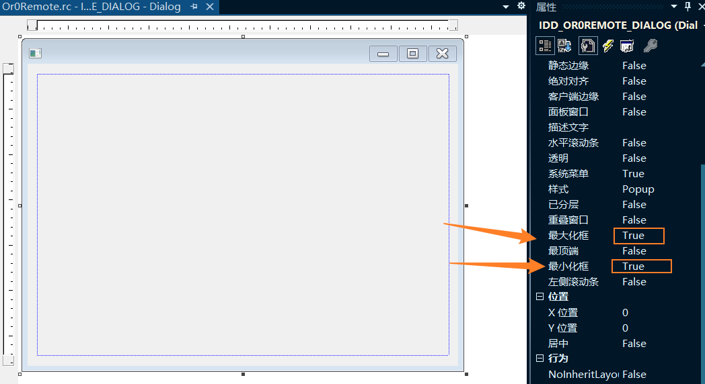
更改对话框到适当大小
添加服务端连接后显示的列表控件，控件 ID 设置为： IDIDC_ONLINE ，日志列表控件，控件 ID 设置为： IDC_MESSAGE
伸缩窗口，发现列表不能随着窗口伸缩。
添加列表控件变量 m_CList_Online , m_CList_Message
响应对话框改变大小的消息是 WM_SIZE 就是向对话框抛出这个消息，对话框就会改变大小，我们先响应这个消息，然后再把这个消息向下传递。
可以在对话框的类向导中添加此消息。
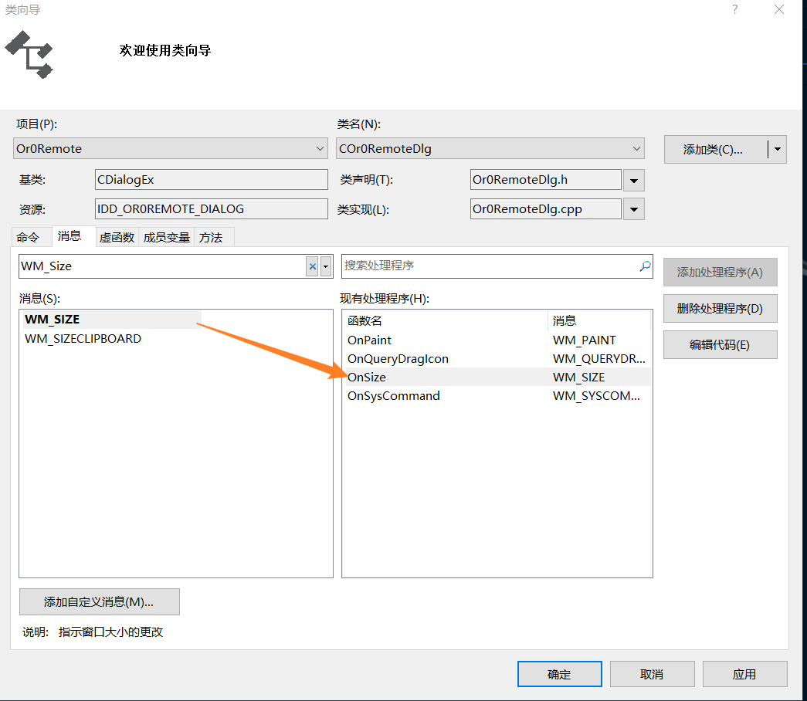
也可以对对话框右键，点击属性，点击消息，在消息一栏中查看 WM_SIZE 消息，添加处理函数。
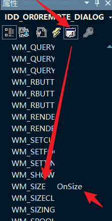
- 写入更改列表大小的代码
if (m_CList_Online.m_hWnd!=NULL) | |
{ | |
CRect rc; | |
rc.left=1; // 列表的左坐标 | |
rc.top=80; // 列表的上坐标 | |
rc.right=cx-1; // 列表的右坐标 | |
rc.bottom=cy-160; // 列表的下坐标 | |
m_CList_Online.MoveWindow(rc); | |
} | |
if (m_CList_Message.m_hWnd!=NULL) | |
{ | |
CRect rc; | |
rc.left=1; // 列表的左坐标 | |
rc.top=cy-156; // 列表的上坐标 | |
rc.right=cx-1; // 列表的右坐标 | |
rc.bottom=cy-6; // 列表的下坐标 | |
m_CList_Message.MoveWindow(rc); | |
} |
- 示范伸缩
刚初始化完的对话框：
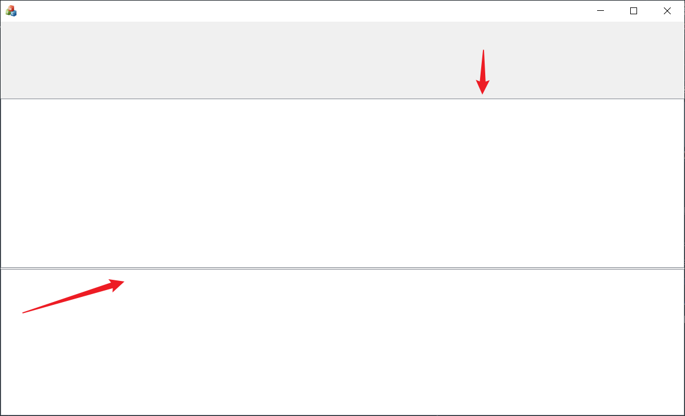
稍微拉伸了一点的对话框，既触发了 WM_SIZE 消息后的对话框：
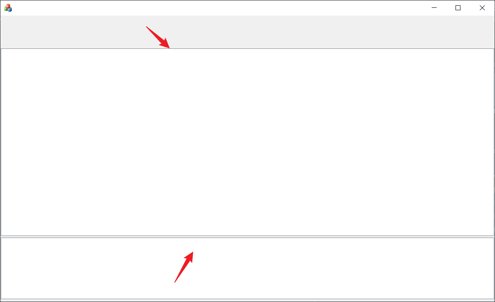
需要解决伸缩后与原来有差别的问题！
- 伸缩同原来的有差别，小技巧：
我们可以在初始化对话框的函数 OnInitDialog 中触发 WM_SIZE 消息。
添加下面的代码：
CRect rect; | |
GetWindowRect(&rect); | |
rect.bottom+=20; | |
MoveWindow(rect); |
这样初始化窗口的时候 List 控件就被修正成了与拉伸后一样的了。
# 加入列表的列名称
- 参考 gh0st 的列表中的列名:
0IP 1 所在区域 2 计算机名 / 备注 3 操作系统 4CPU 5 摄像头 6Ping
- 我们已经为列表控件添加变量了，我们来查看变量的类型:
CListCtrl类
查看 MSDN 找到
int InsertColumn( | |
int nCol, // 列的顺序 | |
LPCTSTR lpszColumnHeading, // 列的名字 | |
int nFormat = LVCFMT_LEFT, // 列对齐的方式 LVCFMT_LEFT, LVCFMT_RIGHT,LVCFMT_CENTER | |
int nWidth = -1, // 列的宽度 | |
int nSubItem = -1 // 与之联系的子条目 默认为 - 1 我们不用写 | |
); |
- 有了这些我们可以现在就写入代码了，但请等一下！
我们来考虑一下以后的扩展问题，假如我们要加入新的列那会不会很麻烦，我们每一个列都写入了固定的顺序 (0--6) 没有考虑扩展，比如在 CPU 列的后面加入显示内存大小，那么加入的就是第 5 列，而第 5 列恰好是摄头，这样如果更改的话，就会很麻烦。
解决这个问题的方式就是用枚举 enum 写入列的顺序时不写入硬编码 (0----6) 而是写入枚举成员这样我们只需很小的改动就能达到目的。
很多知识都是这个样，学习到的知识只有到实践中才体会到用处很大，枚举变量就是一个例子，我开始学习时感觉这个一点用处都没有，但在实践中感觉用
枚举解决问题更简单。
这里算是学到了一个新的用法！
- 因为这个列表比较重要所以要放到一个每一个文件都能访问到的文件很自然的就是 stdafx.h（在如今的 VS2019 中，我把他们放到了 pch.h）
enum | |
{ | |
ONLINELIST_IP=0, //IP 的列顺序 | |
ONLINELIST_ADDR, // 地址 | |
ONLINELIST_COMPUTER_NAME, // 计算机名 / 备注 | |
ONLINELIST_OS, // 操作系统 | |
ONLINELIST_CPU, //CPU | |
ONLINELIST_VIDEO, // 摄像头 | |
ONLINELIST_PING //PING | |
}; |
- 处理列表的代码应该统一放在一处，添加列表处理的代码 InitList ()
可以在类视图中对着对话框的类右键添加函数
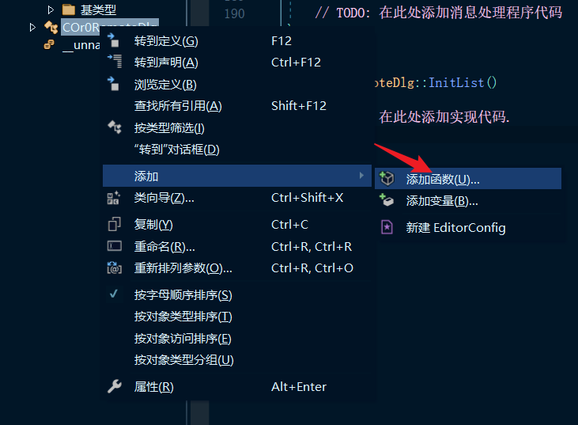
- 写入加入列表列名的代码:
列表的名字与列表的宽度是同一一对应的关系，以后为了以后修改方便建立这样的一个结构体:
typedef struct | |
{ | |
LPTSTR title; // 列表的名称 | |
size_t nWidth; // 列表的宽度 | |
}COLUMNSTRUCT; |
然后建立这个结构体变量的数组
COLUMNSTRUCT g_Column_Online_Data[] = | |
{ | |
{_T("IP"), 148 }, | |
{_T("区域"), 150 }, | |
{_T("计算机名/备注"), 160 }, | |
{_T("操作系统"), 128 }, | |
{_T("CPU"), 80 }, | |
{_T("摄像头"), 81 }, | |
{_T("PING"), 81 } | |
}; |
添加全局变量 int g_Column_Online_Count=7; // 列表的个数
- 在 initList 中写入加入列表列名称的代码:
for (size_t i = 0; i < g_Column_Online_Count; i++) | |
{ | |
m_CList_Online.InsertColumn(i, g_Column_Online_Data[i].title, g_Column_Online_Data[i].nWidth); | |
} |
在 Oninitdlg 中写入 InitList ()
改变列表控件的属性 ICon 改为 Report
同样的方法改动日志消息的列表控件看操作
// 变量声明 | |
size_t g_Column_Count_Message=3; // 列表的个数 | |
COLUMNSTRUCT g_Column_Message_Data[] = | |
{ | |
{_T("信息类型"), 68 }, | |
{_T("时间"), 100 }, | |
{_T("信息内容"), 660 } | |
}; | |
// 在 InitList 中添加一下代码 | |
for (size_t i = 0; i < g_Column_Message_Count; i++) | |
{ | |
m_CList_Message.InsertColumn(i, g_Column_Message_Data[i].title, LVCFMT_CENTER, g_Column_Message_Data[i].nWidth); | |
} |
- 记得改变列表控件的属性 ICon 改为 Report
# 使列表控件的列的宽度支持伸缩
我们伸缩对话框的时候，发现 List 控件的每一列并不能随着窗口的拉伸而改变，现在解决这一问题！
- 查找相关的函数：
CListCtrl::SetColumnWidth
查看 MSDN
BOOL SetColumnWidth( | |
int nCol, // 列索引 | |
int cx // 列宽度 | |
); |
- 声明列的总宽度:
size_t g_Column_Online_Width=0; // 列总宽度
- 得到列的总宽度 initlist 中:
g_Column_Online_Width+=g_Column_Online_Data [i].nWidth; // 得到总宽度
- 在 OnSize 添加代码:
double dcx=cx; // 对话框的总宽度 | |
for(int i=0;i<g_Column_Online_Count;i++){ // 遍历每一个列 | |
double dd=g_Column_Online_Data[i].nWidth; // 得到当前列的宽度 | |
dd/=g_Column_Online_Width; // 看一看当前宽度占总长度的几分之几 | |
dd*=dcx; // 用原来的长度乘以所占的几分之几得到当前的宽度 | |
int lenth=dd; // 转换为 int 类型 | |
m_CList_Online.SetColumnWidth(i,(lenth)); // 设置当前的宽度 | |
} |
- 注意使用 double 类型的变量，原因就不解释了。
6. 改变日志的列表宽度
和上面的步骤一样了
int g_Column_Message_Width=0; // 列总宽度 | |
g_Column_Message_Width+=g_Column_Message_Data[i].nWidth; // 得到总宽度 | |
for(int i=0;i<g_Column_Online_Count;i++){ // 遍历每一个列 | |
double dd=g_Column_Message_Data[i].nWidth; // 得到当前列的宽度 | |
dd/=g_Column_Message_Width; // 看一看当前宽度占总长度的几分之几 | |
dd*=dcx; // 用原来的长度乘以所占的几分之几得到当前的宽度 | |
int lenth=dd; // 转换为 int 类型 | |
m_CList_Message.SetColumnWidth(i,(lenth)); // 设置当前的宽度 | |
} |
- 改变一下流程
在 OnInitDialog 中 ：
// TODO: 在此添加额外的初始化代码 | |
// 初始化 List 控件 | |
InitList(); | |
// 触发 WM_SIZE 执行 OnSize 函数 | |
CRect rect; | |
GetWindowRect(&rect); | |
rect.bottom += 20; | |
MoveWindow(rect); |
在 OnSize 函数中：
void COr0RemoteDlg::OnSize(UINT nType, int cx, int cy) | |
{ | |
// TODO: 在此处添加消息处理程序代码 | |
CDialogEx::OnSize(nType, cx, cy); | |
if (m_CList_Online.m_hWnd != NULL) | |
{ | |
CRect rc; | |
rc.left = 1; // 列表的左坐标 | |
rc.top = 80; // 列表的上坐标 | |
rc.right = cx - 1; // 列表的右坐标 | |
rc.bottom = cy - 160; // 列表的下坐标 | |
m_CList_Online.MoveWindow(rc); | |
} | |
if (m_CList_Message.m_hWnd != NULL) | |
{ | |
CRect rc; | |
rc.left = 1; // 列表的左坐标 | |
rc.top = cy - 156; // 列表的上坐标 | |
rc.right = cx - 1; // 列表的右坐标 | |
rc.bottom = cy - 6; // 列表的下坐标 | |
m_CList_Message.MoveWindow(rc); | |
} | |
if (g_Column_Online_Width && g_Column_Message_Width) | |
{ | |
double dcx = cx; // 对话框的总宽度 | |
double dd = 0; | |
for (int i = 0; i < g_Column_Online_Count; i++) { // 遍历每一个列 | |
dd = g_Column_Online_Data[i].nWidth; // 得到当前列的宽度 | |
dd /= g_Column_Online_Width; // 看一看当前宽度占总长度的几分之几 | |
dd *= dcx; // 用原来的长度乘以所占的几分之几得到当前的宽度 | |
m_CList_Online.SetColumnWidth(i, (int)dd); // 设置当前的宽度 | |
} | |
for (int i = 0; i < g_Column_Online_Count; i++) { // 遍历每一个列 | |
dd = g_Column_Message_Data[i].nWidth; // 得到当前列的宽度 | |
dd /= g_Column_Message_Width; // 看一看当前宽度占总长度的几分之几 | |
dd *= dcx; // 用原来的长度乘以所占的几分之几得到当前的宽度 | |
m_CList_Message.SetColumnWidth(i, (int)dd); // 设置当前的宽度 | |
} | |
} | |
} |
把初始化 List 放在前面，这样做是为了后执行 MoveWindow () 触发消息并执行 OnSize 函数，这样当窗口显示的时候就是按比例调整好的了。
就不会出现，拖动前和拖动后比例差异不一样的问题了（因为拖动前显示的使我们之前手动设置的，肯定是不完美的。）
附上结果：
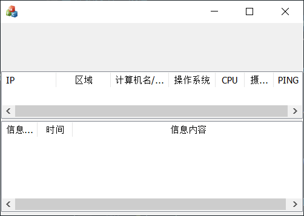
# 列表中添加条目
- 查找相关函数
CListCtrl::InsertItem()
InsertItem 插入条目
SetItemText 设置哪个列的文本
int InsertItem( | |
int nItem, // 插入哪一行 | |
LPCTSTR lpszItem // 该行 0 列显示的字符 | |
); | |
BOOL SetItemText( | |
int nItem, // 改动那个行 | |
int nSubItem, // 该行中那个子列 | |
LPCTSTR lpszText // 要设置的字符 | |
); |
- 列表设计思路:
对于这种庞大的远控程序，我们要有一个设计思路。
(1) 服务端上线后要显示在列表中，这样有一个统一的函数来处理会使代码更加简洁。
(2) 消息显示分为成功失败两种，还要在其中显示消息产生的时间，这样也应该有一个统一的函数来处理。
- 上线列表添加处理:
在对话框的类中添加函数：
void CPCRemoteDlg::AddList(CString strIP, CString strAddr, CString strPCName, CString strOS, CString strCPU, CString strVideo, CString strPing) | |
{ | |
m_CList_Online.InsertItem(0,strIP); // 默认为 0 行 这样所有插入的新列都在最上面 | |
m_CList_Online.SetItemText(0,ONLINELIST_ADDR,strAddr); // 设置列的显示字符 这里 ONLINELIST_ADDR 等 为第二节课中的枚举类型 用这样的方法 | |
m_CList_Online.SetItemText(0,ONLINELIST_COMPUTER_NAME,strPCName); // 解决问题会避免以后扩展时的冲突 | |
m_CList_Online.SetItemText(0,ONLINELIST_OS,strOS); | |
m_CList_Online.SetItemText(0,ONLINELIST_CPU,strCPU); | |
m_CList_Online.SetItemText(0,ONLINELIST_VIDEO,strVideo); | |
m_CList_Online.SetItemText(0,ONLINELIST_PING,strPing); | |
} |
- 添加日志消息的处理:
void CPCRemoteDlg::ShowMessage(bool bIsOK, CString strMsg) | |
{ | |
CString strIsOK,strTime; | |
CTime t=CTime::GetCurrentTime(); | |
strTime=t.Format("%H:%M:%S"); | |
if (bIsOK) | |
{ | |
strIsOK="执行成功"; | |
}else{ | |
strIsOK="执行失败"; | |
} | |
m_CList_Message.InsertItem(0,strIsOK); | |
m_CList_Message.SetItemText(0,1,strTime); | |
m_CList_Message.SetItemText(0,2,strMsg); | |
} |
- 添加伪上线，和日志的测试代码，在没有加入 gh0st 传输内核之前是要自己测试的:
然后在 OnInitDialog 中添加如下代码:
AddList(_T("192.168.0.1"), _T("本机局域网"), _T("Lang"), _T("Windows7"), _T("2.2GHZ"), _T("有"), _T("123232")); | |
ShowMessage(true, _T("软件初始化成功...")); |
- 使点击时整个列都是选中状态:
InitList () 中加入代码:
m_CList_Online.SetExtendedStyle(LVS_EX_FULLROWSELECT); | |
m_CList_Message.SetExtendedStyle(LVS_EX_FULLROWSELECT); |
结果如下：
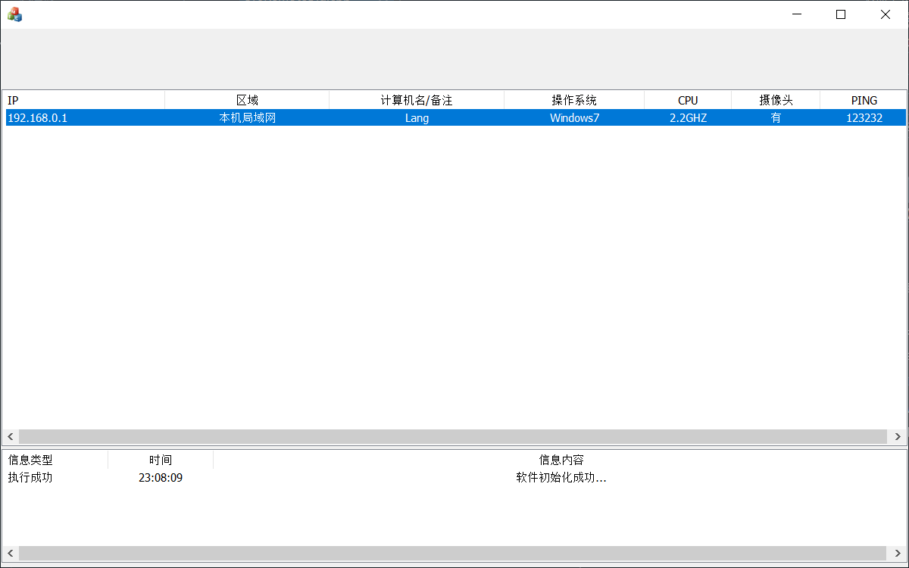
# 设计列表中的右键菜单
添加菜单资源
功能菜单项并写入相应的菜单 ID
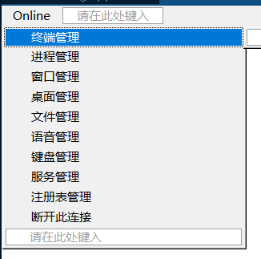
- 显示菜单
(1) 参考 gh0st 代码，看一下 gh0st 是怎样显示菜单的
a. 找到主菜单
b. 查看主菜单的 ID
c. 搜索 IDR_LIST
d. 分析代码:
CMenu popup; // 声明一个菜单变量 | |
popup.LoadMenu(IDR_LIST); // 载入菜单资源 | |
CMenu* pM = popup.GetSubMenu(0); // 得到菜单项 | |
CPoint p; | |
GetCursorPos(&p); // 得到鼠标指针的位置 | |
int count = pM->GetMenuItemCount(); // 得到菜单的个数 | |
if (m_pListCtrl->GetSelectedCount() == 0) // 如果没有选中列表中的条目 | |
{ | |
for (int i = 0; i < count - 2; i++) // 遍历每一个菜单 | |
{ | |
pM->EnableMenuItem(i, MF_BYPOSITION | MF_DISABLED | MF_GRAYED); // 该项变灰 | |
} | |
pM->EnableMenuItem(count - 1, MF_BYPOSITION | MF_DISABLED | MF_GRAYED); | |
} | |
// 全选 | |
if (m_pListCtrl->GetItemCount() > 0) // 列表中的条目项大于 0 | |
pM->EnableMenuItem(count - 2, MF_BYPOSITION | MF_ENABLED); // 激活倒数第二个菜单 | |
else | |
pM->EnableMenuItem(count - 2, MF_BYPOSITION | MF_DISABLED | MF_GRAYED); // 否则变灰 | |
pM->TrackPopupMenu(TPM_LEFTALIGN, p.x, p.y, this); // 在指定位置显示菜单 | |
} |
(2) 添加我们的代码
a. 添加右键列表的响应函数
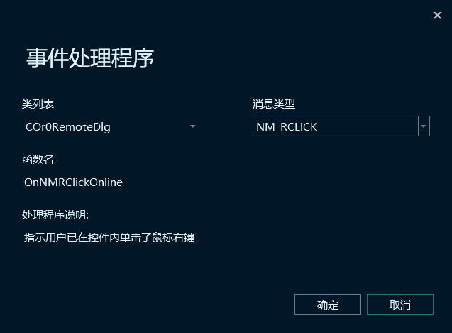
b. 添加代码
CMenu popup; | |
popup.LoadMenu(IDR_MENU_ONLINE); | |
CMenu* pM = popup.GetSubMenu(0); | |
CPoint p; | |
GetCursorPos(&p); | |
int count = pM->GetMenuItemCount(); | |
if (m_CList_Online.GetSelectedCount() == 0) // 如果没有选中 | |
{ | |
for (int i = 0; i < count; i++) | |
{ | |
pM->EnableMenuItem(i, MF_BYPOSITION | MF_DISABLED | MF_GRAYED); // 菜单全部变灰 | |
} | |
} | |
pM->TrackPopupMenu(TPM_LEFTALIGN, p.x, p.y, this); |
附上结果：
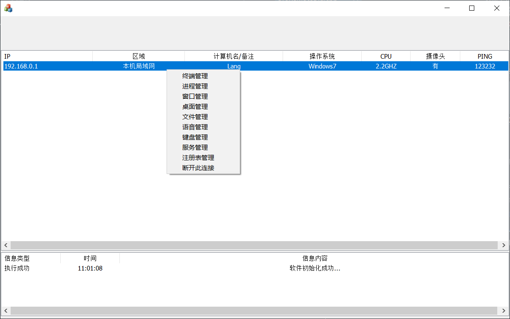
# 添加菜单消息响应、删除列表中的条目
- 添加菜单消息响应的函数:
终端管理 进程管理 窗口管理 桌面管理 文件管理 语音管理 视频管理 服务管理 注册表管理
这里可以直接对着菜单中的条目右键选择添加事件处理程序：
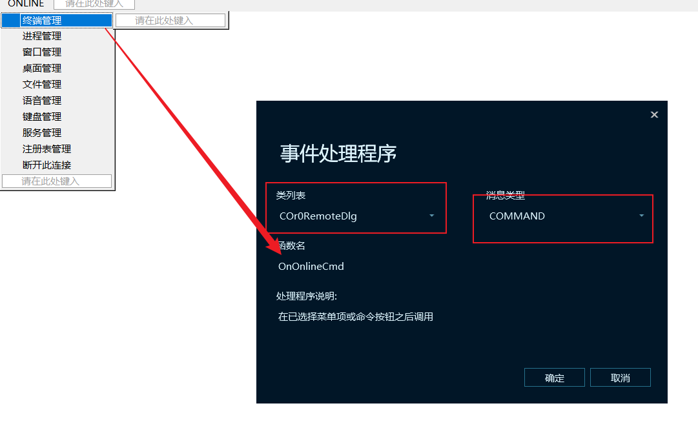
也可以在类视图中对对话框右键选择属性，点击事件，然后如下添加事件处理程序：
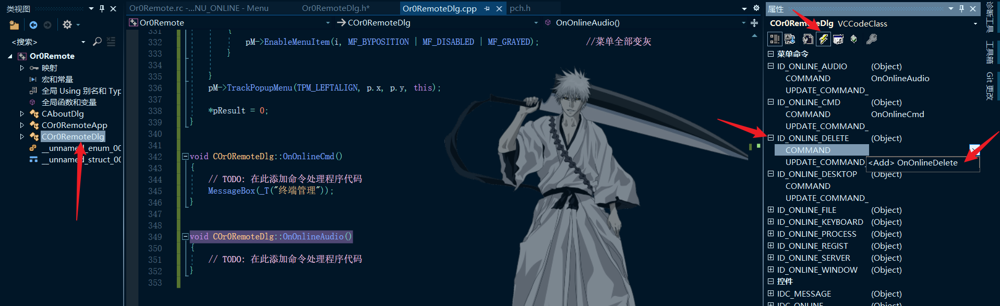
- 删除列表中的条目:
查找函数:
(1)CListCtrl::DeleteItem()
BOOL DeleteItem( | |
int nItem // 列表的索引 从 0 开始 | |
); |
(2) GetSelectionMark()
我们还要得到选中的是哪一行。int GetSelectionMark( ); //得到用户选中的条目索引
- 添加下线菜单 断开连接 ID: IDM_ONLINE_DELETE
这个我之前已经添加了
- 添加菜单中的断开链接的响应代码:
int iSelect=m_CList_Online.GetSelectionMark( ); | |
m_CList_Online.DeleteItem(iSelect); |
- 产生下线日志:
我们要知道哪一个主机断开了连接，既获取下线主机的 IP。可以用这个函数：
CListCtrl::GetItemText
CString GetItemText( | |
int nItem, // 哪一行 | |
int nSubItem // 行中的那个子列 | |
) const; |
- 接着添加代码:
CString strIP; | |
int iSelect=m_CList_Online.GetSelectionMark( ); | |
strIP=m_CList_Online.GetItemText(iSelect,ONLINELIST_IP); | |
m_CList_Online.DeleteItem(iSelect); | |
strIP+="断开连接"; | |
ShowMessage(true,strIP); |
附上结图:
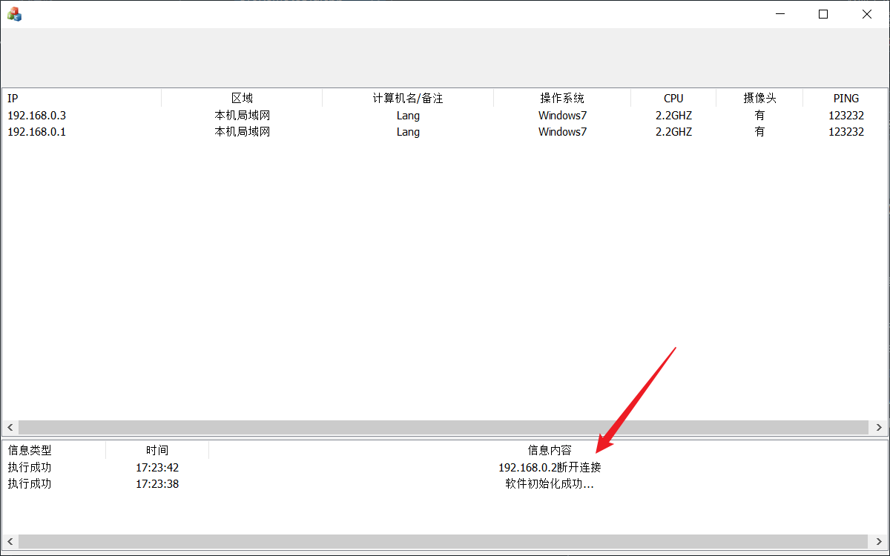
# 为对话框添加菜单栏及其事件响应
创建菜单的资源 ID: IDR_MENU_MAIN
添加菜单:
选项 -- 参数设置 (IDM_MAIN_SET)---- 生成服务端 (IDM_MAIN_BUILD)-- 退出 (IDM_MAIN_CLOSE)
帮助 -- 关于 (IDM_MAIN_ABOUT)
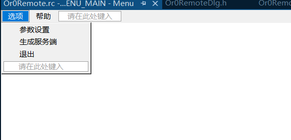
- 为对话框添加代码，显示菜单:
(1) 认识几个 API 函数:
HMENU LoadMenu( // 载入菜单 | |
HINSTANCE hInstance, // 资源所在文件模块的句柄标识 | |
LPCTSTR lpMenuName // 资源 ID | |
); | |
BOOL SetMenu( // 为窗口设置菜单 | |
HWND hWnd, // 要设置菜单的窗口句柄 | |
HMENU hMenu // 菜单标识 | |
); | |
BOOL DrawMenuBar( // 显示菜单 | |
HWND hWnd // 要显示菜单的窗口句柄 | |
); |
(2) 在 OnInitDialog 中添加添加菜单的代码
HMENU hmenu; | |
hmenu=LoadMenu(NULL,MAKEINTRESOURCE(IDR_MENU_MAIN)); // 载入菜单资源 | |
::SetMenu(this->GetSafeHwnd(),hmenu); // 为窗口设置菜单 | |
::DrawMenuBar(this->GetSafeHwnd()); // 显示菜单 |
- 为每一个菜单添加事件响应
添加事件响应函数。
- 添加代码:
退出菜单代码:
BOOL PostMessage( | |
HWND hWnd, // 标识向那个窗口发送消息 | |
UINT Msg, // 消息内容 | |
WPARAM wParam, // 消息参数 | |
LPARAM lParam // 消息参数 | |
); |
PostMessage(WM_CLOSE,0,0);
菜单中关于项的响应代码:
CAboutDlg dlgAbout; | |
dlgAbout.DoModal(); |
其他代码用 MessageBox 代替。
# 为对话框添加状态条并在态条上显示文字
创建字符串资源 ID: IDR_STATUSBAR_STRING
添加状态条变量:
CStatusBar m_wndStatusBar; //状态条
3. 查看 MSDN:
CStatusBar::SetIndicators
BOOL SetIndicators( // 在状态条中加入对应字符串 ID | |
const UINT* lpIDArray, // 字符串 ID | |
int nIDCount // 个数 | |
); | |
void SetPaneInfo( // 设置状态条的显示状态 | |
int nIndex, // 状态条的索引 | |
UINT& nID, // 状态条的字符 ID | |
UINT& nStyle, // 状态条的样式 | |
int& cxWidth // 状态条的宽度 | |
) const; |
4. 写入代码创建状态条的代码:
(1) 创建字符 ID 的数组
static UINT indicators[] = | |
{ | |
IDR_STATUSBAR_STRING | |
}; |
(2) 添加 CreatStatusBar 函数并写入代码:
if (!m_wndStatusBar.Create(this) || | |
!m_wndStatusBar.SetIndicators(indicators, | |
sizeof(indicators)/sizeof(UINT))) // 创建状态条并设置字符资源的 ID | |
{ | |
TRACE0("Failed to create status bar\n"); | |
return ; // fail to create | |
} | |
CRect rc; | |
::GetWindowRect(m_wndStatusBar.m_hWnd,rc); | |
m_wndStatusBar.MoveWindow(rc); // 移动状态条到指定位置 |
(3) 在 OnSize 中添加代码:
if(m_wndStatusBar.m_hWnd!=NULL){ // 当对话框大小改变时 状态条大小也随之改变 | |
CRect rc; | |
rc.top=cy-20; | |
rc.left=0; | |
rc.right=cx; | |
rc.bottom=cy; | |
m_wndStatusBar.MoveWindow(rc); | |
m_wndStatusBar.SetPaneInfo(0, m_wndStatusBar.GetItemID(0),SBPS_POPOUT, cx-10); | |
} |
注意这里修改，关于 Message List 的大小设置框，使其底部留出状态栏的高度。
- 写入状态上显示文字的代码:
在对话框的类中添加 protected 成员变量 int iCount
并且在构造函数中把其初始化为 0。
在 ShowMessage () 函数的最后加入以下代码：
CString strStatusMsg; | |
if (strMsg.Find(_T("上线")) > 0) // 处理上线还是下线消息 | |
{ | |
iCount++; | |
} | |
else if (strMsg.Find(_T("下线")) > 0) | |
{ | |
iCount--; | |
} | |
else if (strMsg.Find(_T("断开")) > 0) | |
{ | |
iCount--; | |
} | |
iCount = (iCount <= 0 ? 0 : iCount); // 防止 iCount 有 - 1 的情况 | |
strStatusMsg.Format(_T("连接：%d"), iCount); | |
m_wndStatusBar.SetPaneText(0, strStatusMsg); // 在状态条上显示文字 |
6. 列表中添加条目时产生日志:
记得在 Addlist 中添加 ShowMessage(true, strIP + _T("主机上线"));
截图如下：
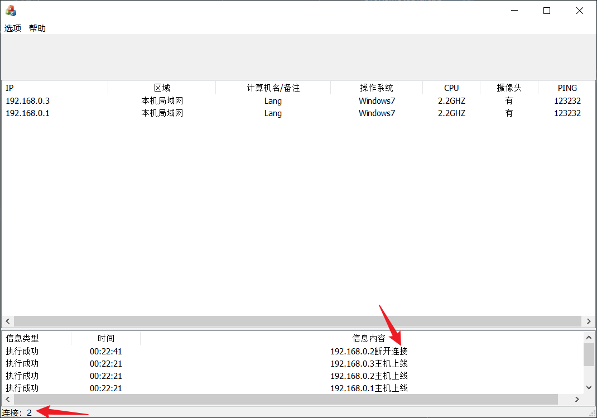
# 为对话框添加工具条
- 创建工具条资源
ID: IDR_TOOLBAR_MAIN
共 12 个工具条 9+3。 创建 12 个方块就行了
- 添加 BMP 资源:
ID: IDB_BITMAP_MAIN
这里自己 DIY 了每一个位图，然后在 https://www.toptal.com/developers/css/sprite-generator/ 生成精灵图。
复制 TrueColorToolBar 文件，添加 CTrueColorToolBar 类.
在对话框的头文件中添加:
#include "TrueColorToolBar.h"
- 并且在对话框的类中声明 protected 成员变量:
CTrueColorToolBar m_ToolBar;
添加 CreateToolBar () 函数
分析 CTrueColorToolBar 类:
继承 CToolBar查看 MSDN CToolBar 类:
CreateToolBar () 函数中写入代码:
if (!m_ToolBar.CreateEx(this, TBSTYLE_FLAT, WS_CHILD | WS_VISIBLE | CBRS_TOP | |
| CBRS_GRIPPER | CBRS_TOOLTIPS | CBRS_FLYBY | CBRS_SIZE_DYNAMIC) || | |
!m_ToolBar.LoadToolBar(IDR_TOOLBAR_MAIN)) | |
{ | |
TRACE0("Failed to create toolbar\n"); | |
return; // fail to create | |
} | |
m_ToolBar.ModifyStyle(0, TBSTYLE_FLAT); //Fix for WinXP | |
m_ToolBar.LoadTrueColorToolBar | |
( | |
48, // 加载真彩工具条 | |
IDB_BITMAP_MAIN, | |
IDB_BITMAP_MAIN, | |
IDB_BITMAP_MAIN | |
); | |
RECT rt, rtMain; | |
GetWindowRect(&rtMain); | |
rt.left = 0; | |
rt.top = 0; | |
rt.bottom = 80; | |
rt.right = rtMain.right - rtMain.left + 10; | |
m_ToolBar.MoveWindow(&rt, TRUE); | |
m_ToolBar.SetButtonText(0, _T("终端管理")); | |
m_ToolBar.SetButtonText(1, _T("进程管理")); | |
m_ToolBar.SetButtonText(2, _T("窗口管理")); | |
m_ToolBar.SetButtonText(3, _T("屏幕监控")); | |
m_ToolBar.SetButtonText(4, _T("文件管理")); | |
m_ToolBar.SetButtonText(5, _T("语音监听")); | |
m_ToolBar.SetButtonText(6, _T("键盘记录")); | |
m_ToolBar.SetButtonText(7, _T("服务管理")); | |
m_ToolBar.SetButtonText(8, _T("注册表管理")); | |
m_ToolBar.SetButtonText(10, _T("参数设置")); | |
m_ToolBar.SetButtonText(11, _T("生成服务端")); | |
m_ToolBar.SetButtonText(12, _T("帮助")); | |
RepositionBars(AFX_IDW_CONTROLBAR_FIRST, AFX_IDW_CONTROLBAR_LAST, 0); |
- OnSize 中添加代码:
if(m_ToolBar.m_hWnd!=NULL) // 工具条 | |
{ | |
CRect rc; | |
rc.top=rc.left=0; | |
rc.right=cx; | |
rc.bottom=80; | |
m_ToolBar.MoveWindow(rc); // 设置工具条大小位置 | |
} |
Oninitdialog 中添加 CreateToolBar
vs 系列中工具条不能添加消息响应，然后应该给工具条添加已经设置过的菜单的消息，省去好多麻烦。
截图：
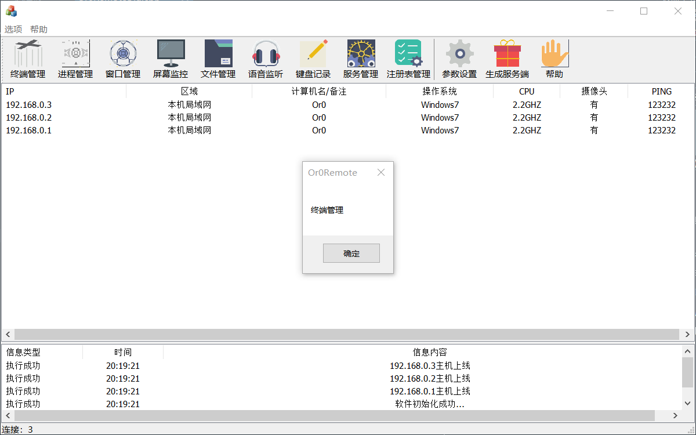
# 为程序添加系统托盘
- 创建菜单资源
ID: IDR_MENU_NOTIFY
添加子菜单并设置其 ID
显示 IDM_NOTIFY_SHOW
退出 IDM_NOTIFY_CLOSE
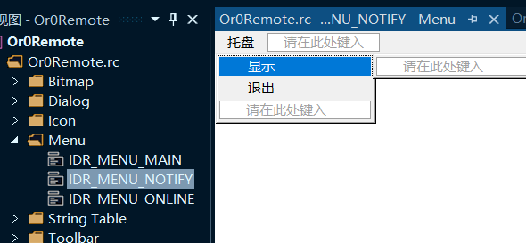
- 认识一个 API
Shell_NotifyIcon
// 向系统托盘中加入图标 | |
BOOL Shell_NotifyIcon( | |
DWORD dwMessage, // 状态 | |
PNOTIFYICONDATA lpdata // 含有图标 消息响应 的一个结构体 | |
); |
- 认识
NOTIFYICONDATA结构体:
typedef struct _NOTIFYICONDATA { | |
DWORD cbSize; // 结构体自身大小 | |
HWND hWnd; // 托盘的父窗口 托盘发出的消息由哪一个窗口响应 | |
UINT uID; // 显示图标的 ID | |
UINT uFlags; // 托盘的状态 (如有图标，有气泡提示，有消息响应等) | |
UINT uCallbackMessage; // 托盘事件的消息响应函数 | |
HICON hIcon; // 图标的变量 | |
TCHAR szTip[64]; // 气泡的显示文字 | |
DWORD dwState; // 图标的显示状态 | |
DWORD dwStateMask; // 图标的显示状态 | |
TCHAR szInfo[256]; // 气泡的显示文字 (可以忽略) | |
union { | |
UINT uTimeout; | |
UINT uVersion; | |
}; | |
TCHAR szInfoTitle[64]; | |
DWORD dwInfoFlags; | |
GUID guidItem; | |
HICON hBalloonIcon; | |
} NOTIFYICONDATA, *PNOTIFYICONDATA; |
- 在
OnInitDialog函数中写入加入系统脱盘的代码:
需要在对话框的类中添加 protected 成员 NOTIFYICONDATA nid
这里我添加了一个函数 CreateSystemTray()
// TODO: 在此处添加实现代码. | |
nid.cbSize = sizeof(nid); // 大小赋值 | |
nid.hWnd = m_hWnd; // 父窗口 | |
nid.uID = IDR_MAINFRAME; //icon ID | |
nid.uFlags = NIF_MESSAGE | NIF_ICON | NIF_TIP; // 托盘所拥有的状态 | |
nid.uCallbackMessage = UM_ICONNOTIFY; // 回调消息 | |
nid.hIcon = m_hIcon; //icon 变量 | |
CString str = _T("Or0Remote编写中……"); // 气泡提示 | |
lstrcpyn(nid.szTip, (LPCTSTR)str, sizeof(nid.szTip) / sizeof(nid.szTip[0])); | |
Shell_NotifyIcon(NIM_ADD, &nid); // 显示托盘 |
- pch.h 文件中加入自定义消息的定义
// 自定义消息 | |
enum | |
{ | |
UM_ICONNOTIFY= WM_USER+0x100, | |
}; |
发现在窗口销毁时托盘依然存在
添加
WM_CLOSE消息并写入代码:
Shell_NotifyIcon(NIM_DELETE, &nid); //销毁图标
- 在对话框类中声明消息处理函数:
afx_msg void OnIconNotify(WPARAM wParam,LPARAM lParam);
- 在 cpp 文件中写入代码:
void COr0RemoteDlg::OnIconNotify(WPARAM wParam, LPARAM lParam) | |
{ | |
switch ((UINT)lParam) | |
{ | |
case WM_LBUTTONDOWN: // click or dbclick left button on icon | |
case WM_LBUTTONDBLCLK: // should show desktop | |
if (!IsWindowVisible()) | |
ShowWindow(SW_SHOW); | |
else | |
ShowWindow(SW_HIDE); | |
break; | |
case WM_RBUTTONDOWN: // click right button, show menu | |
CMenu menu; | |
menu.LoadMenu(IDR_MENU_NOTIFY); | |
CPoint point; | |
GetCursorPos(&point); | |
SetForegroundWindow(); | |
menu.GetSubMenu(0)->TrackPopupMenu( | |
TPM_LEFTBUTTON | TPM_RIGHTBUTTON, | |
point.x, point.y, this, NULL); | |
PostMessage(WM_USER, 0, 0); | |
break; | |
} | |
} |
- 绑定消息映射
ON_MESSAGE(UM_ICONNOTIFY, (LRESULT (__thiscall CWnd::* )(WPARAM,LPARAM))OnIconNotify)
此时就可以响应我们的右键消息了。
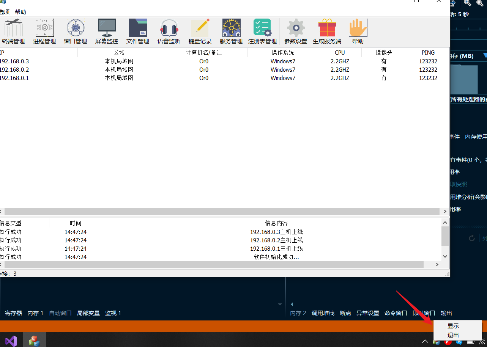
但右键事件还没有对应的事件处理函数。
- 添加显示菜单消息响应
老样子，在类视图中对对话框类右键选择属性，然后选择事件，查找对应的事件并添加响应的处理函数。
void COr0RemoteDlg::OnNotifyClose() | |
{ | |
// TODO: 在此添加命令处理程序代码 | |
PostMessage(WM_CLOSE); | |
} | |
void COr0RemoteDlg::OnNotifyShow() | |
{ | |
// TODO: 在此添加命令处理程序代码 | |
ShowWindow(SW_SHOW); | |
} |
消息已经正常响应了。
至此界面框架编写完毕。